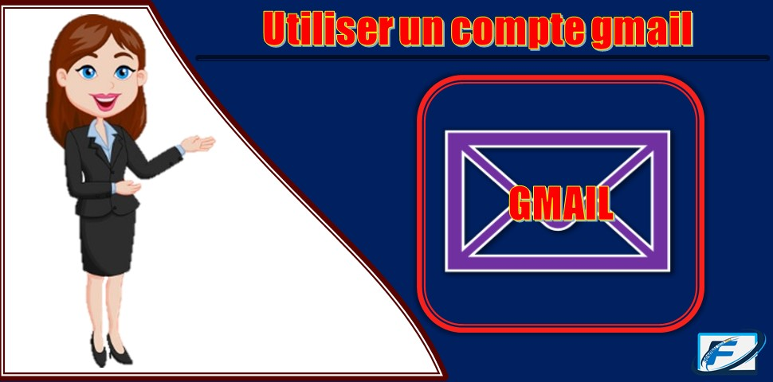

Comment configurer votre internet mobile

Configurer votre internet sur android manuellement.
Dans cette article nous allons voir exactement comment
si vous n'arrive pas a vous connecter a internet sur votre android.
Nous allons pas a vous montrer comment avoir de l'internet gratuit, mais tout simplement
comment configurer manuellement votre connection d'internet mobile et activer le données,
suiver les étapes suivants :
- Aller dans le menu
- Cliquer sur paramettre
- Cliquer sur mobile network
- Cliqur sur Access Point Name (APN)
en haut et a droite vous verez un menue
- Cliquer sur le menu
- Name :Entrer un nom
- Apn :wap.natcomha.com / wap.digicelha.com
- Port :8080
Et voila vous avez configurer votre internet mobile manuellement.
Regarder la video, dans la partie astuce sur cette application.
Articles le plus recents
- 2- Creer un compte gmail
- 3- Syncho compte gmail
- 4- Utilser compte gmail
- 5- suprimer compte gmail
- 2- update google Drive
- 3- Présentation Drive
- 4- Exporter sur Drive
- 5- importer sur Drive
Creer un compte gmail
Nous allons voire comment creer un compte gmail sur android
Pour creer un compte gmail sur android, il exite deux possiplité.
- soit vous passez par le paramettre de votre telephone
- soit vous passez par l'application gmail de votre telephone.
Passons par le paramettre
- Allez dans le menu
- Cliquer sur paramettre
- defiler vers le bas, cliquer sur compte
- Cliquer sur Google, attendez quelque second.
- Cliquer sur creer un compte
- Cliquer sur pour moi attendez quelque second
Enregister vos données personelle
- votre nom et prénom cliquer sur next
- Moi, jours, Année et selectionner votre sexe cliquer sur next
- Selectionner un email ou creer un cliquer sur next
- Enter un mot de pass et confirmer cliquer sur next
- Ignorer cette espace cliquer sur skip
- lire votre mail et cliquer sur next
- Defiler vers le bas et cliquer sur I agree
- Attendez quelque second et vous avez creer votre compte.
- 1- Configurer internet mobile
- 3- Syncho compte gmail
- 4- Utilser compte gmail
- 5- suprimer compte gmail
- 2- update google Drive
- 3- Présentation Drive
- 4- Exporter sur Drive
- 5- importer sur Drive
Comment syncroniser un compte gmail
Essayons de connecter le compte gmail avec les applications
La syncronisation vous permet de connecter avec tous les application
google qui est sur votre android et meme de vos contacts.
- Allez dans le menu
- Cliquer sur paramettre
- Cliquer sur Google
- Cliquer sur creer un compte
- Cliquer sur Votre Email
- En haut et a droite, cliquer sur le menu
- Cliquer sur Sync now
Le compte gmail ne doit jamais partager avec d'autres personne,une ajouter ce compte
gmail, sur un autre android, tous vos contacts se trouvera sur l'autre android aussi.
- 1- Configurer internet mobile
- 3- Syncho compte gmail
- 4- Utilser compte gmail
- 5- suprimer compte gmail
- 2- update google Drive
- 3- Présentation Drive
- 4- Exporter sur Drive
- 5- importer sur Drive
Suprimer un compte gmail

article 4
Pour suprimer compte , c'est tres simple
- Allez dans le menu
- Cliquer sur paramettre
- Cliquer sur Google
- Cliquer sur creer un compte
- Cliquer sur Votre Email
- En haut et a droite, cliquer sur le menu
- Cliquer sur suprimer
Le compte gmail ne doit jamais partager avec d'autres personne,une ajouter ce compte
gmail, sur un autre android, tous vos contacts se trouvera sur l'autre android aussi.